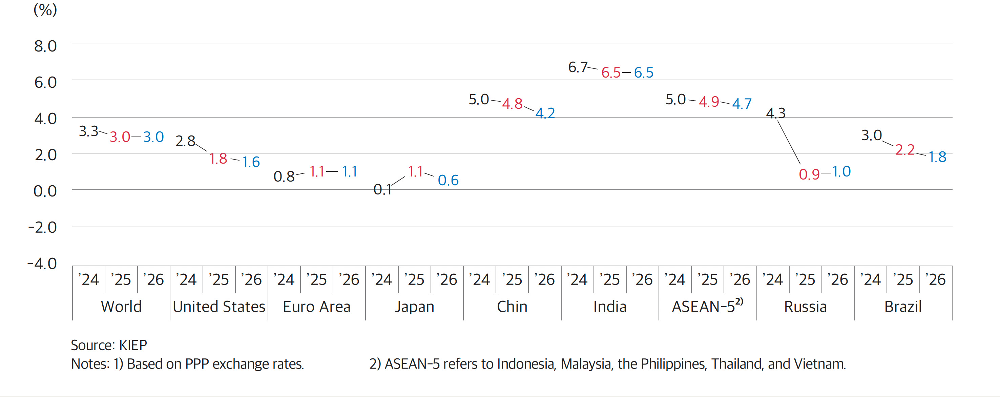
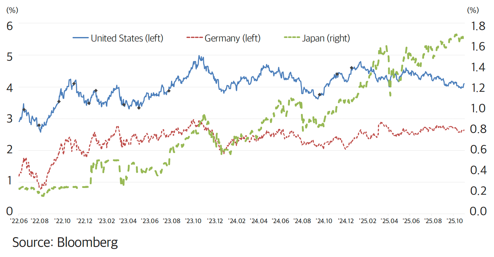
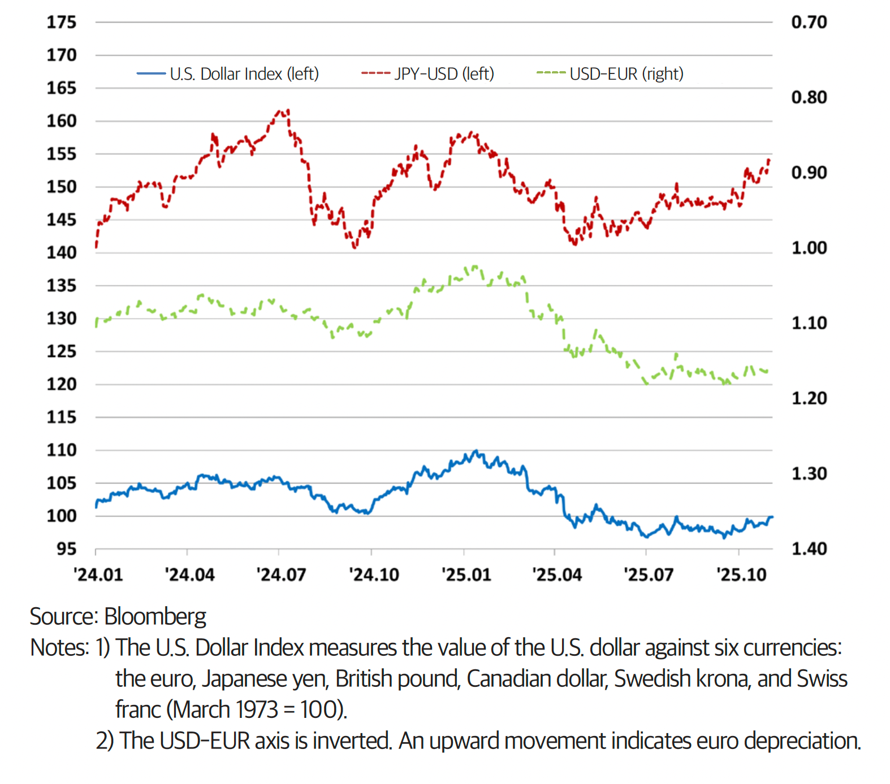

2026 Economic and Business Environment Outlook
The Global Economy in 2026
Buffered Slowdown amid an Asymmetric World
In 2026, the global economy avoids a sharp downturn but enters a phase of moderate low growth. This article examines how asymmetric growth patterns and risks related to tariffs, fiscal policy, and technology are likely to affect trade and industry.
By Sang-Ha Yoon, Executive Director of the International Macroeconomics and Finance Department, Korea Institute for International Economic Policy (KIEP)
Global Growth Expected to Remain Around 3% This Year
In a report released in November 2025, the Korea Institute for International Economic Policy (KIEP) projected a 3.0% global economic growth for 2026. This is on par with the 2025 projection, but clearly lower than the five-year pre-pandemic average. However, growth and trade in major economies, including the United States and China, have proven more resilient than expected this year. As a result, growth projections for both 2025 and 2026 were revised slightly upward compared to the May 2025 forecast. Despite continued tariff shocks and geopolitical tensions, supply chain adjustments and investment in AI-related facilities are acting as moderators, helping the global economy avoid a sharp contraction.
In this context, the global economy in 2026 can be summarized as “buffered slowdown amid an asymmetric world.” Overall growth remains subdued, but the pace of growth and the intensity of risks vary widely across countries, industries, and firms.
Diverging Growth Paths Across Major Economies
Growth in major advanced economies is expected to remain low, recording 1% figures. In the United States, growth is projected to slow from 1.8% in 2025 to 1.6% in 2026, reflecting the effects of combined factors, including cooling employment and consumption, the lingering effects of monetary tightening, and fiscal consolidation. At the same time, investment into AI-related manufacturing supports capital spending and production, resulting in a slowdown in the U.S. economy, rather than an outright recession.
The euro area is projected to record 1.1% growth in 2026, broadly similar to 2025. While export and capital expenditure remain weak due to trade tensions and sluggish external demand, rising wages and public investment through the Recovery and Resilience Facility (RRF) are supporting domestic demand. Inflation stabilization and gradual rate cuts by the European Central Bank (ECB) provide some upside, but fiscal constraints and political uncertainty limit the pace of recovery.
Japan’s growth is expected to slow from 1.1% in 2025 to 0.6% in 2026. Amid U.S.-China tariff disputes, export and capital investment remain weak, while wages are failing to keep pace with inflation, reducing real income and constraining consumption.
A similar divergence is evident among emerging economies. China’s growth is projected to slow from 4.8% in 2025 to 4.2% in 2026, and although export market diversification and stimulus measures are providing stronger-than-expected support to growth this year, structural burdens such as property sector adjustment and local government debt are likely to weaken the effectiveness of policy support this year.
By contrast, India is expected to sustain 6.5% growth figures in both 2025 and 2026. A domestic demand-driven growth structure, combined with infrastructure investment and corporate capital expenditure, supports continued high growth. The ASEAN-5 economies are also projected to grow by 4.7% in 2026. However, some countries, such as Thailand, are expected to record sub-2% growth due to political instability and weakness in tourism and exports.
Growth in resource- and energy-dependent economies such as Russia and Brazil is projected to stop short at 1.0% and 1.8%, respectively. Russia faces the combined pressures of sanctions, declining oil prices, and high interest rates, while Brazil is constrained by elevated interest rates, fiscal burdens, and slowing commodity prices, which weaken growth momentum.
Global and Major Regional Economic Growth Outlook1) (November 2025)
Tariffs, Fiscal Policy, and AI: Three Key Risks to the Global Economy
Despite a moderate growth trajectory, downside risks to the global economy remain significant. First, there is the risk that tariff policies and the global trade order may face renewed shifts. Uncertainty surrounding U.S. tariff policy has already heightened tensions in the global trading system. If the fragile agreements reached to date were to unravel, triggering a cycle of reciprocal tariff hikes and retaliation, a renewed global trade war could sharply suppress global trade and investment. In addition the U.S. Supreme Court rulings on reciprocal tariffs could, depending on the outcome, deliver a substantial shock to the global economy.
The second risk factor is the erosion of fiscal space. In many advanced economies, debt ratios are already at elevated levels due to pandemic responses, rising defense spending, and expenditures related to aging demographics. In China, government debt is also increasing rapidly, driven in part by stress in the real estate sector. In a sharp economic downturn or financial instability scenario, many countries would find it difficult to respond with aggressive fiscal stimulus as in the past. Some economies also face the risk of a fiscal crisis, marked by surging government bond yields and deteriorating creditworthiness.
The third risk factor involves investment concentration in AI and other advanced technologies. Sharp equity price gains in large AI-related technology firms are supporting consumption and growth in countries such as the United States through wealth effects. However, concentrated market capitalization in a small number of firms creates a latent structural risk, leaving global financial markets vulnerable to major disruptions even from minor shocks. If productivity gains from technology investment fail to spill over sufficiently into the real economy, this may lead to asset price corrections and investment contractions.
Signals from Interest Rates, Exchange Rates, and Oil Prices
International financial and commodity markets can be characterized as in a phase of gradual normalization amid heightened uncertainty. U.S. Treasury yields are likely to fluctuate as inflation concerns and fiscal deficit worries collide with slowing growth and safe-haven demand, but over the longer term, a gradual downward stabilization is expected. In Europe, government bond yields face downward pressure from price stability and interest rate cuts, but concerns over fiscal soundness are likely to cap declines. In Japan, inflation and fiscal factors leave room for further increases in long-term interest rates.
In foreign exchange markets, the U.S. dollar is likely to gradually weaken as growth slows and monetary policy shifts toward easing in the United States. However, if tariff risks and geopolitical tensions re-emerge, a renewed dollar preference could resurface. Strategies premised on a one-directional weak dollar therefore carry risks. Currencies such as the Euro, Yen, and Won are expected to appreciate through gradual dollar weakness, although the extent will vary depending on regional growth prospects and policy credibility.
Oil prices face underlying downward pressure due to a gradual easing of OPEC+ production cuts, expanding supply from the United States, and a slowdown in global economic activity. At the same time, geopolitical risks involving the Middle East, Russia, and Iran are amplifying both upside and downside volatility. Decision-making frameworks that rely on a single oil price scenario therefore remain exposed to considerable risk.
Long-Term (10-Year) Government Bond Yields in Major Economies
U.S. Dollar Index1) and USD-EUR2) and JPY-USD Exchange Rates
A Checklist for Businesses
The global economic environment in 2026 delivers several key messages for businesses. First, companies should focus not on the “global average,” but on asymmetries within their own portfolios. Markets with significant structural constraints, such as the United States, Europe, Japan, China, Russia, and Brazil, require different approaches compared to high-growth markets such as India and ASEAN. It is also essential to strengthen shock-absorption capacity by carefully balancing domestic and export exposure, manufacturing and services, and traditional and emerging industries.
Second, tariff and supply chain risks are no longer temporary variables. They have become structural risks that require constant management through diversification of production, procurement, and sales bases, reassessment of inventory and sourcing strategies for key components and raw materials, and identification of alternative suppliers.
Third, AI investment should be pursued aggressively but with discipline. Priorities should be set not by trends or short-term stock price movements, but by the extent to which AI improves productivity, quality, and risk management across the firm’s value chain. Without adequate technical talent, data infrastructure, and robust security and ethics frameworks, AI investment risks becoming a costly experiment with limited returns.
Fourth, in an environment of heightened interest rate volatility, financial soundness and liquidity management function as a competitive edge. Companies should diversify their borrowing structures and conduct stress tests for multiple scenarios to prepare for sudden shocks in interest rates, exchange rates, and oil prices.
Finally, as uncertainty increases, stakeholder trust becomes more important. Firms that strengthen ESG practices, corporate governance, and risk management systems are more likely to secure stakeholder trust, attract long-term capital, and retain stakeholder confidence even during periods of crisis. The global economy in 2026 is less a crisis than a phase of moderate low growth. The key to turning this environment into an opportunity lies in expanding corporate resilience and strategic options in this era of asymmetry.